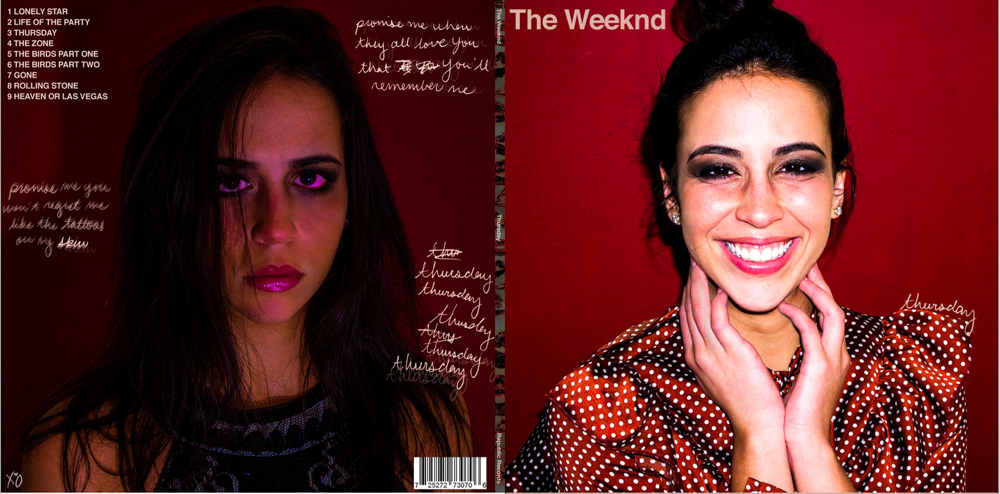
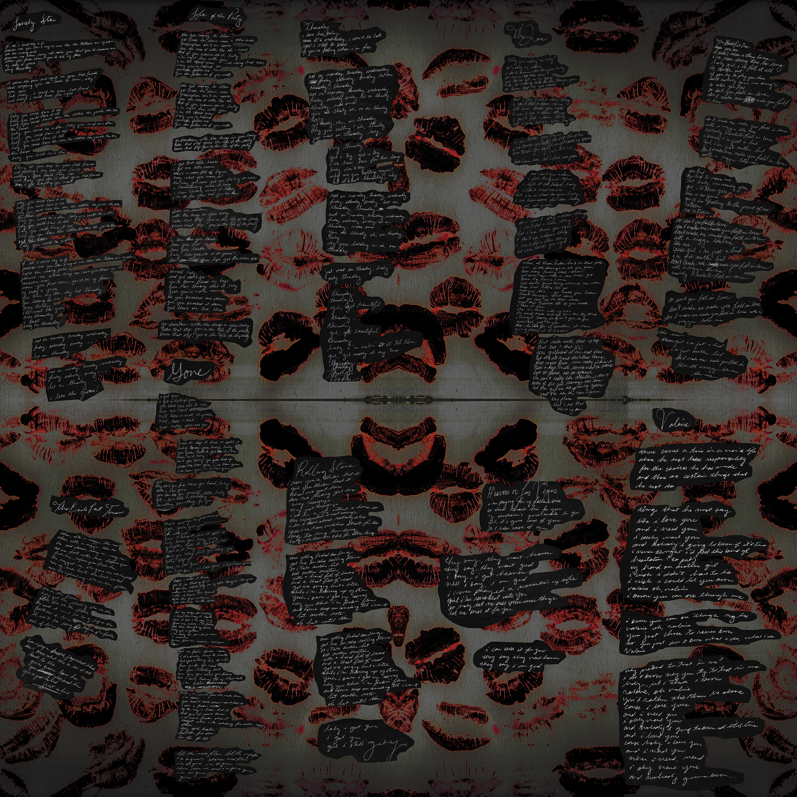

BERNADETTE FIGUEROA
GRAPHIC DESIGN
VINYL RECORD DESIGN & LYRIC POSTER
PHOTOGRAPHY + CONCEPT + DESIGN BY ME
GRAPHIC DESIGN 1 FINAL PROJECT2018



My remake of the album "Thursday" by The Weeknd for my Typography class. In this mixtape, he
tells a tale about a drug invested love story with a twisted gal named Valerie. Thursday is the only
day he will love her. So the front cover (on the right) is Thursday, she cheery and the colors are
vibrant. On the left side, it's every other day of the week, she is a neurotic, a druggie, and very sad.
The colors are very dark and grim and she looks like hell. To give it an intimate feeling I hand wrote
some of the lyrics all over the portrait.
For the lyric poster, I wanted to create a twisty and dark romantic vibe. To create the background of this poster, I put
red paint on my lips and kissed a sheet of paper a bunch of times, scanned it in and edited it to get
this interesting smokey, dark rorschach of kisses. Then again to get that intimate aspect I hand
wrote the lyrics in cursive and scanned it in, and laid it all out in Illustrator.